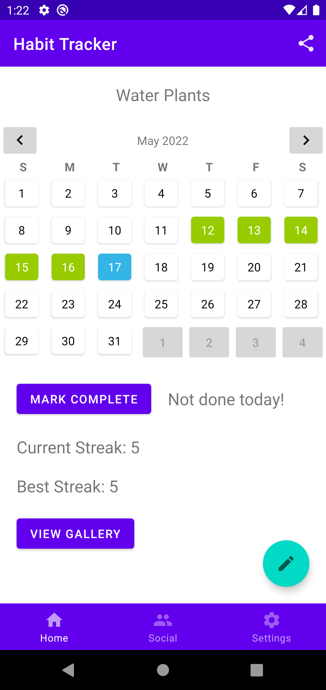
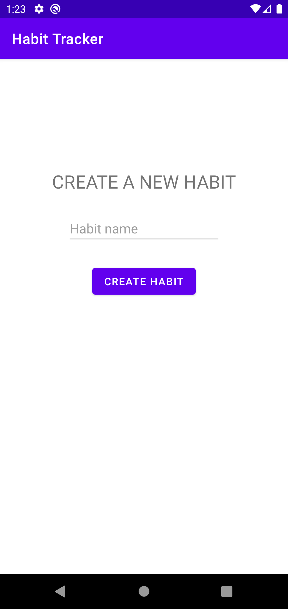
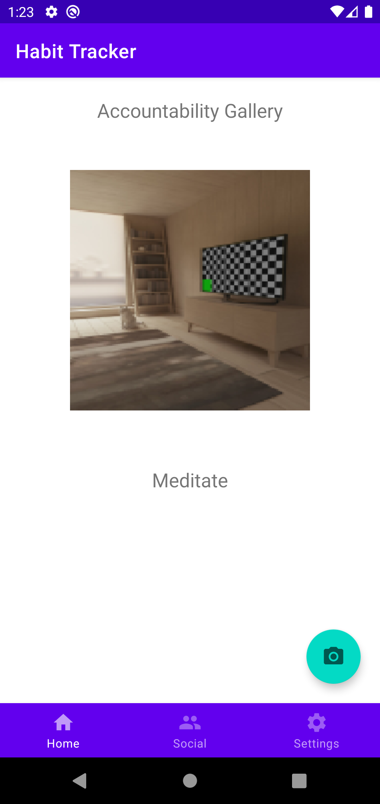
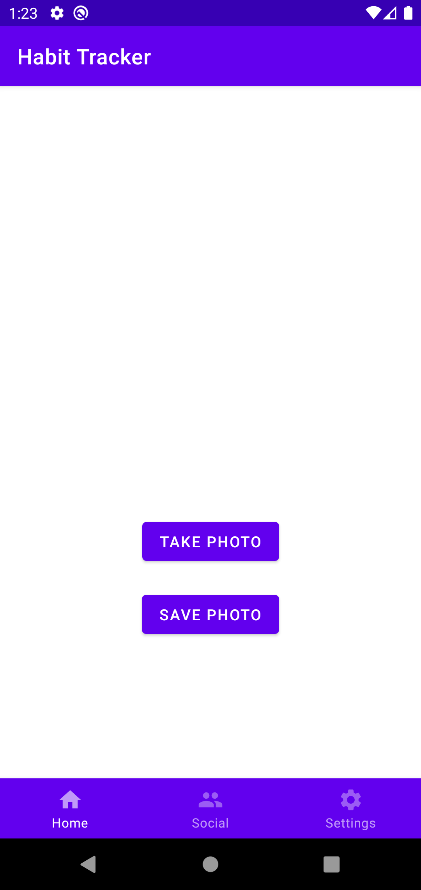

There is a list containing that users habits. Clicking on a habit will let them view the habit in more detail.
The user can navigate to the social and settings page using the bottom navigation bar.
Tapping the button with a plus will allow the user to add a new habit.
View Habit

Here is the page they click on a habit.
There is a calendar displaying which days they've done a habit. Blue indicates todays date, and green a day the habit was done.
Tapping the button mark complete marks the habit as complete and updates the relevant information such as the streaks you can also see.
Tapping the accountability gallery takes the user to a page where they can view photos of times they did their habits for motivation.
Tapping the button with a pencil will allow the user to edit their habit.
Create and Edit Habit

Here is the page the user sees when creating a new habit.
A new habit will be created by giving it a name and clicking create.
The edit page is the same giving you the option to update the habit name. Additionally there is a delete button which will allow you to delete the habit.
Accountability Gallery

Here is the accountability gallery.
Here is a list of photos with the habit name. These are photos the user has taken to motivate themself to habits. Swipping left or right allows you to change the image.
Tapping the button with a camera will allow the user to take a new photo.
Take Photo

Here is the page where the user can take a new photo.
Tapping the take photo button will open the camera and allow the user to take a photo. The photo will then be shown above the buttons.
Tapping save photo saves that photo to the accountability gallery.